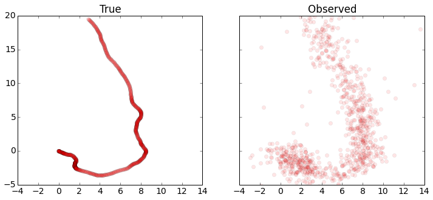
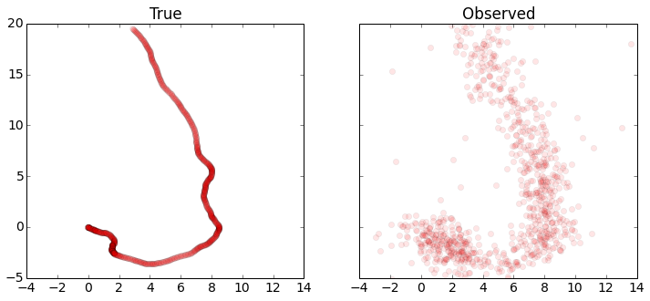

Robust Kalman filtering for vehicle tracking¶
We will try to pinpoint the location of a moving vehicle with high accuracy from noisy sensor data. We’ll do this by modeling the vehicle state as a discrete-time linear dynamical system. Standard Kalman filtering can be used to approach this problem when the sensor noise is assumed to be Gaussian. We’ll use robust Kalman filtering to get a more accurate estimate of the vehicle state for a non-Gaussian case with outliers.
Problem statement¶
A discrete-time linear dynamical system consists of a sequence of state vectors \(x_t \in \mathbf{R}^n\), indexed by time \(t \in \lbrace 0, \ldots, N-1 \rbrace\) and dynamics equations
where \(w_t \in \mathbf{R}^m\) is an input to the dynamical system (say, a drive force on the vehicle), \(y_t \in \mathbf{R}^r\) is a state measurement, \(v_t \in \mathbf{R}^r\) is noise, \(A\) is the drift matrix, \(B\) is the input matrix, and \(C\) is the observation matrix.
Given \(A\), \(B\), \(C\), and \(y_t\) for \(t = 0, \ldots, N-1\), the goal is to estimate \(x_t\) for \(t = 0, \ldots, N-1\).
Kalman filtering¶
A Kalman filter estimates \(x_t\) by solving the optimization problem
where \(\tau\) is a tuning parameter. This problem is actually a least squares problem, and can be solved via linear algebra, without the need for more general convex optimization. Note that since we have no observation \(y_{N}\), \(x_N\) is only constrained via \(x_{N} = Ax_{N-1} + Bw_{N-1}\), which is trivially resolved when \(w_{N-1} = 0\) and \(x_{N} = Ax_{N-1}\). We maintain this vestigial constraint only because it offers a concise problem statement.
This model performs well when \(w_t\) and \(v_t\) are Gaussian. However, the quadratic objective can be influenced by large outliers, which degrades the accuracy of the recovery. To improve estimation in the presence of outliers, we can use robust Kalman filtering.
Robust Kalman filtering¶
To handle outliers in \(v_t\), robust Kalman filtering replaces the quadratic cost with a Huber cost, which results in the convex optimization problem
where \(\phi_\rho\) is the Huber function
The Huber penalty function penalizes estimation error linearly outside of a ball of radius \(\rho\), whereas in standard Kalman filtering, all errors are penalized quadratically. Thus, large errors are penalized less harshly, making this model more robust to outliers.
Vehicle tracking example¶
We’ll apply standard and robust Kalman filtering to a vehicle tracking problem with state \(x_t \in \mathbf{R}^4\), where \((x_{t,0}, x_{t,1})\) is the position of the vehicle in two dimensions, and \((x_{t,2}, x_{t,3})\) is the vehicle velocity. The vehicle has unknown drive force \(w_t\), and we observe noisy measurements of the vehicle’s position, \(y_t \in \mathbf{R}^2\).
The matrices for the dynamics are
where \(\gamma\) is a velocity damping parameter.
1D Model¶
The recurrence is derived from the following relations in a single dimension. For this subsection, let \(x_t, v_t, w_t\) be the vehicle position, velocity, and input drive force. The resulting acceleration of the vehicle is \(w_t - \gamma v_t\), with \(- \gamma v_t\) is a damping term depending on velocity with parameter \(\gamma\).
The discretized dynamics are obtained from numerically integrating:
Extending these relations to two dimensions gives us the dynamics matrices \(A\) and \(B\).
Helper Functions¶
import matplotlib
import matplotlib.pyplot as plt
import numpy as np
def plot_state(t,actual, estimated=None):
'''
plot position, speed, and acceleration in the x and y coordinates for
the actual data, and optionally for the estimated data
'''
trajectories = [actual]
if estimated is not None:
trajectories.append(estimated)
fig, ax = plt.subplots(3, 2, sharex='col', sharey='row', figsize=(8,8))
for x, w in trajectories:
ax[0,0].plot(t,x[0,:-1])
ax[0,1].plot(t,x[1,:-1])
ax[1,0].plot(t,x[2,:-1])
ax[1,1].plot(t,x[3,:-1])
ax[2,0].plot(t,w[0,:])
ax[2,1].plot(t,w[1,:])
ax[0,0].set_ylabel('x position')
ax[1,0].set_ylabel('x velocity')
ax[2,0].set_ylabel('x input')
ax[0,1].set_ylabel('y position')
ax[1,1].set_ylabel('y velocity')
ax[2,1].set_ylabel('y input')
ax[0,1].yaxis.tick_right()
ax[1,1].yaxis.tick_right()
ax[2,1].yaxis.tick_right()
ax[0,1].yaxis.set_label_position("right")
ax[1,1].yaxis.set_label_position("right")
ax[2,1].yaxis.set_label_position("right")
ax[2,0].set_xlabel('time')
ax[2,1].set_xlabel('time')
def plot_positions(traj, labels, axis=None,filename=None):
'''
show point clouds for true, observed, and recovered positions
'''
matplotlib.rcParams.update({'font.size': 14})
n = len(traj)
fig, ax = plt.subplots(1, n, sharex=True, sharey=True,figsize=(12, 5))
if n == 1:
ax = [ax]
for i,x in enumerate(traj):
ax[i].plot(x[0,:], x[1,:], 'ro', alpha=.1)
ax[i].set_title(labels[i])
if axis:
ax[i].axis(axis)
if filename:
fig.savefig(filename, bbox_inches='tight')
Problem Data¶
We generate the data for the vehicle tracking problem. We’ll have \(N=1000\), \(w_t\) a standard Gaussian, and \(v_t\) a standard Gaussian, except \(20\%\) of the points will be outliers with \(\sigma = 20\).
Below, we set the problem parameters and define the matrices \(A\), \(B\), and \(C\).
n = 1000 # number of timesteps
T = 50 # time will vary from 0 to T with step delt
ts, delt = np.linspace(0,T,n,endpoint=True, retstep=True)
gamma = .05 # damping, 0 is no damping
A = np.zeros((4,4))
B = np.zeros((4,2))
C = np.zeros((2,4))
A[0,0] = 1
A[1,1] = 1
A[0,2] = (1-gamma*delt/2)*delt
A[1,3] = (1-gamma*delt/2)*delt
A[2,2] = 1 - gamma*delt
A[3,3] = 1 - gamma*delt
B[0,0] = delt**2/2
B[1,1] = delt**2/2
B[2,0] = delt
B[3,1] = delt
C[0,0] = 1
C[1,1] = 1
Simulation¶
We seed \(x_0 = 0\) (starting at the origin with zero velocity) and
simulate the system forward in time. The results are the true vehicle
positions x_true (which we will use to judge our recovery) and the
observed positions y.
We plot the position, velocity, and system input \(w\) in both dimensions as a function of time. We also plot the sets of true and observed vehicle positions.
sigma = 20
p = .20
np.random.seed(6)
x = np.zeros((4,n+1))
x[:,0] = [0,0,0,0]
y = np.zeros((2,n))
# generate random input and noise vectors
w = np.random.randn(2,n)
v = np.random.randn(2,n)
# add outliers to v
np.random.seed(0)
inds = np.random.rand(n) <= p
v[:,inds] = sigma*np.random.randn(2,n)[:,inds]
# simulate the system forward in time
for t in range(n):
y[:,t] = C.dot(x[:,t]) + v[:,t]
x[:,t+1] = A.dot(x[:,t]) + B.dot(w[:,t])
x_true = x.copy()
w_true = w.copy()
plot_state(ts,(x_true,w_true))
plot_positions([x_true,y], ['True', 'Observed'],[-4,14,-5,20],'rkf1.pdf')
 

Kalman filtering recovery¶
The code below solves the standard Kalman filtering problem using CVXPY. We plot and compare the true and recovered vehicle states. Note that the recovery is distorted by outliers in the measurements.
%%time
import cvxpy as cp
x = cp.Variable(shape=(4, n+1))
w = cp.Variable(shape=(2, n))
v = cp.Variable(shape=(2, n))
tau = .08
obj = cp.sum_squares(w) + tau*cp.sum_squares(v)
obj = cp.Minimize(obj)
constr = []
for t in range(n):
constr += [ x[:,t+1] == A*x[:,t] + B*w[:,t] ,
y[:,t] == C*x[:,t] + v[:,t] ]
cp.Problem(obj, constr).solve(verbose=True)
x = np.array(x.value)
w = np.array(w.value)
plot_state(ts,(x_true,w_true),(x,w))
plot_positions([x_true,y], ['True', 'Noisy'], [-4,14,-5,20])
plot_positions([x_true,x], ['True', 'KF recovery'], [-4,14,-5,20], 'rkf2.pdf')
print("optimal objective value: {}".format(obj.value))
-----------------------------------------------------------------
OSQP v0.4.1 - Operator Splitting QP Solver
(c) Bartolomeo Stellato, Goran Banjac
University of Oxford - Stanford University 2018
-----------------------------------------------------------------
problem: variables n = 8004, constraints m = 6000
nnz(P) + nnz(A) = 22000
settings: linear system solver = qdldl,
eps_abs = 1.0e-03, eps_rel = 1.0e-03,
eps_prim_inf = 1.0e-04, eps_dual_inf = 1.0e-04,
rho = 1.00e-01 (adaptive),
sigma = 1.00e-06, alpha = 1.60, max_iter = 4000
check_termination: on (interval 25),
scaling: on, scaled_termination: off
warm start: on, polish: on
iter objective pri res dua res rho time
1 0.0000e+00 6.14e+01 6.14e+03 1.00e-01 1.28e-02s
50 1.1057e+04 3.57e-07 8.27e-08 1.00e-01 3.01e-02s
plsh 1.1057e+04 7.11e-15 1.24e-14 -------- 3.78e-02s
status: solved
solution polish: successful
number of iterations: 50
optimal objective: 11057.3550
run time: 3.78e-02s
optimal rho estimate: 7.70e-02
optimal objective value: 11057.354957764113
CPU times: user 13 s, sys: 598 ms, total: 13.6 s
Wall time: 13.8 s

Robust Kalman filtering recovery¶
Here we implement robust Kalman filtering with CVXPY. We get a better recovery than the standard Kalman filtering, which can be seen in the plots below.
%%time
import cvxpy as cp
x = cp.Variable(shape=(4, n+1))
w = cp.Variable(shape=(2, n))
v = cp.Variable(shape=(2, n))
tau = 2
rho = 2
obj = cp.sum_squares(w)
obj += cp.sum([tau*cp.huber(cp.norm(v[:,t]),rho) for t in range(n)])
obj = cp.Minimize(obj)
constr = []
for t in range(n):
constr += [ x[:,t+1] == A*x[:,t] + B*w[:,t] ,
y[:,t] == C*x[:,t] + v[:,t] ]
cp.Problem(obj, constr).solve(verbose=True)
x = np.array(x.value)
w = np.array(w.value)
plot_state(ts,(x_true,w_true),(x,w))
plot_positions([x_true,y], ['True', 'Noisy'], [-4,14,-5,20])
plot_positions([x_true,x], ['True', 'Robust KF recovery'], [-4,14,-5,20],'rkf3.pdf')
print("optimal objective value: {}".format(obj.value))
ECOS 2.0.4 - (C) embotech GmbH, Zurich Switzerland, 2012-15. Web: www.embotech.com/ECOS
It pcost dcost gap pres dres k/t mu step sigma IR | BT
0 +0.000e+00 -2.923e+02 +7e+05 3e-01 3e-02 1e+00 2e+02 --- --- 1 1 - | - -
1 +5.090e+02 +4.360e+02 +2e+05 4e-01 1e-02 3e+01 6e+01 0.8051 2e-01 2 1 1 | 0 0
2 +4.188e+03 +4.134e+03 +2e+05 3e-01 9e-03 3e+01 5e+01 0.4259 6e-01 1 1 1 | 0 0
3 +9.956e+03 +9.923e+03 +1e+05 3e-01 8e-03 4e+01 4e+01 0.5830 5e-01 1 1 2 | 0 0
4 +1.881e+04 +1.880e+04 +7e+04 3e-01 5e-03 3e+01 2e+01 0.7189 3e-01 1 1 1 | 0 0
5 +2.572e+04 +2.572e+04 +4e+04 2e-01 3e-03 2e+01 1e+01 0.5464 3e-01 1 1 1 | 0 0
6 +2.986e+04 +2.985e+04 +3e+04 2e-01 2e-03 1e+01 6e+00 0.5716 3e-01 2 2 1 | 0 0
7 +3.262e+04 +3.262e+04 +1e+04 9e-02 1e-03 7e+00 3e+00 0.6007 2e-01 2 2 2 | 0 0
8 +3.425e+04 +3.425e+04 +8e+03 5e-02 7e-04 5e+00 2e+00 0.5871 3e-01 2 2 2 | 0 0
9 +3.601e+04 +3.601e+04 +4e+03 3e-02 3e-04 2e+00 9e-01 0.6383 2e-01 2 2 2 | 0 0
10 +3.728e+04 +3.727e+04 +2e+03 1e-02 2e-04 1e+00 5e-01 0.7925 4e-01 2 2 2 | 0 0
11 +3.759e+04 +3.759e+04 +1e+03 1e-02 1e-04 1e+00 3e-01 0.5191 5e-01 2 2 2 | 0 0
12 +3.824e+04 +3.824e+04 +6e+02 6e-03 5e-05 5e-01 2e-01 0.9890 4e-01 2 2 2 | 0 0
13 +3.860e+04 +3.860e+04 +3e+02 3e-03 2e-05 3e-01 7e-02 0.6740 2e-01 2 2 2 | 0 0
14 +3.864e+04 +3.864e+04 +3e+02 3e-03 2e-05 3e-01 7e-02 0.2982 7e-01 2 2 3 | 0 0
15 +3.876e+04 +3.876e+04 +2e+02 2e-03 1e-05 2e-01 4e-02 0.9890 6e-01 2 2 2 | 0 0
16 +3.889e+04 +3.889e+04 +8e+01 1e-03 4e-06 1e-01 2e-02 0.7740 4e-01 3 3 3 | 0 0
17 +3.899e+04 +3.899e+04 +2e+01 4e-04 1e-06 3e-02 6e-03 0.9702 3e-01 3 3 3 | 0 0
18 +3.901e+04 +3.901e+04 +1e+01 4e-04 6e-07 3e-02 4e-03 0.6771 5e-01 4 3 3 | 0 0
19 +3.903e+04 +3.903e+04 +7e+00 2e-04 3e-07 2e-02 2e-03 0.9383 5e-01 3 2 3 | 0 0
20 +3.905e+04 +3.905e+04 +2e+00 1e-04 1e-07 1e-02 6e-04 0.8982 3e-01 4 4 4 | 0 0
21 +3.906e+04 +3.906e+04 +9e-01 5e-05 5e-08 5e-03 2e-04 0.9342 3e-01 3 2 3 | 0 0
22 +3.907e+04 +3.907e+04 +3e-01 4e-05 3e-08 4e-03 8e-05 0.8457 3e-01 5 4 4 | 0 0
23 +3.908e+04 +3.908e+04 +8e-02 1e-05 8e-09 1e-03 2e-05 0.9890 3e-01 3 3 3 | 0 0
24 +3.908e+04 +3.908e+04 +1e-02 2e-06 2e-09 2e-04 3e-06 0.9013 5e-02 3 3 3 | 0 0
25 +3.908e+04 +3.908e+04 +2e-03 4e-07 4e-10 4e-05 5e-07 0.9207 8e-02 3 2 2 | 0 0
26 +3.908e+04 +3.908e+04 +7e-04 2e-07 2e-10 2e-05 2e-07 0.9890 4e-01 2 2 2 | 0 0
27 +3.908e+04 +3.908e+04 +8e-05 3e-08 5e-11 2e-06 2e-08 0.9009 2e-02 2 2 2 | 0 0
28 +3.908e+04 +3.908e+04 +2e-05 1e-08 2e-11 4e-07 5e-09 0.9890 2e-01 2 2 2 | 0 0
29 +3.908e+04 +3.908e+04 +2e-06 3e-09 5e-12 5e-08 5e-10 0.9058 2e-02 2 1 1 | 0 0
OPTIMAL (within feastol=3.1e-09, reltol=5.3e-11, abstol=2.1e-06).
Runtime: 1.129066 seconds.
optimal objective value: 39077.76954636933
CPU times: user 3min 37s, sys: 3.44 s, total: 3min 41s
Wall time: 3min 55s